За курса
Функционално програмиране за напреднали със Scala
2023/2024

Днес :)
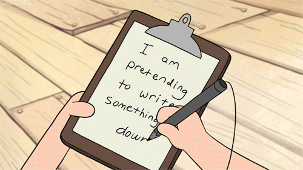
Неща които ще чуете днес…
- Кои сме ние?
- Административни неща за курса
- Накратко защо въобще функционално?
- Има ли причина да уча Скала 2024-а година, човек?
- Kакво ще учим?
- Ресурси
- Малко примерен код
Ние?
…може би и други!
Сбирки и админастративни неща
- Понеделник и сряда от 18:15 до 20:00
- в зали 02 и 01 съответно
- От тази година 4 часа лекции
- 1 час семинари?
- Изцяло на място
- Но ще опитаме да правим записи
- За да се получи курсът е нужно и вашето участие
- Slack – най-лесно може да ни намерите там <- новини и комуникация.
- Материали в GitHub: https://github.com/scala-fmi/scala-fmi-2024
- Домашни и финален проект – GitHub Classroom
Оценяване?
- Домашни през семестъра (около 5): 50 точки
- Финален проект: 50 точки
- Бонус точки
- Общо: 100+
- Ще следим за стил (важен за цялостната оценка)
Скала за оценяване (pun intended):
| Оценка | Точки |
| 6 | ≥ 82 |
| 5 | 70–81 |
| 4 | 58–69 |
| 3 | 46–57 |
| 2 | < 46 |
Функционално? Кратка история
- 1930–1940 – Ламбда смятане от Алонсо Чърч
- модел на изчисление, базиран на композиция на анонимни функции
- 1958 – LISP от Джон МакКартни – първи език за ФП
- Повлиян от математиката
- Рекурсия като цел
- Въвежда garbage collection
- Кодът е данни
- 1973 – ML от Робин Милнър
- статично типизиране
- type inference. Типова система на Хиндли-Милнър
- Параметричен полиморфизъм (Generics)
- Pattern matching
- 1980-те – допълнително развитие, Standard ML, Miranda (lazy evaluation)
Функционално? Кратка история
- 1986 – Erlang от Джо Армстронг и Ериксън
- фокус на телекоми и толерантни на грешки дистрибутирани системи
- 1990 – Haskell, отворен стандард за ФП език
- абстракция чрез type classes
- контролиран монаден вход/изход
- 2000-те – Scala от Мартин Одерски (2004-та), Clojure от Рич Хики
(2007-ма)
- Неизменими структури от данни
- Средства за конкурентни и дистрибутирани системи
- Комбинация на практики от различни езици (напр. ООП + ФП в Scala)
- Края на 2000-те до наши дни – ФП елементи се появяват в почти всеки език. Защо?
Мартин Одерски
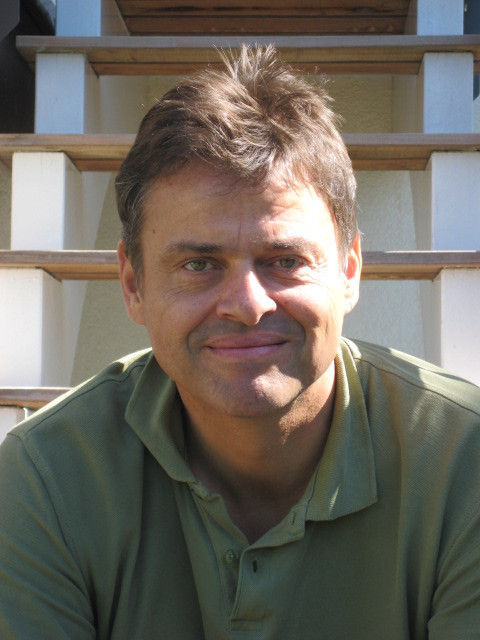
- Професор в EPFL, Лозана
- Възхитен от ФП във време, в което Java изплува като платформа
- Решава да ги обедини в нов език – Pizza 🍕 – като добави елементи
към Java
- Параметричен полиформизъм (Generics)
- Функции от по-висок ред
- Pattern matching
- Имплементацията му на generics и изцяло новият компилатор, който написва, стават част от Java
Стъпка назад
- Java има много ограничения
- Как би изглеждал език, комбиниращ ФП и ООП, ако го дизайнваме в момента?
SCAlable LAnguage (Scala) – Януари 2004-та
- Без (твърде) много feature-и в самия език
- Вместо това малко, но пълно множество от мощни езикови конструкции
- Имплементиране на feature-и в библиотеки, използвайки тези конструкции
Език, който скалира според нуждите
Малка граматика
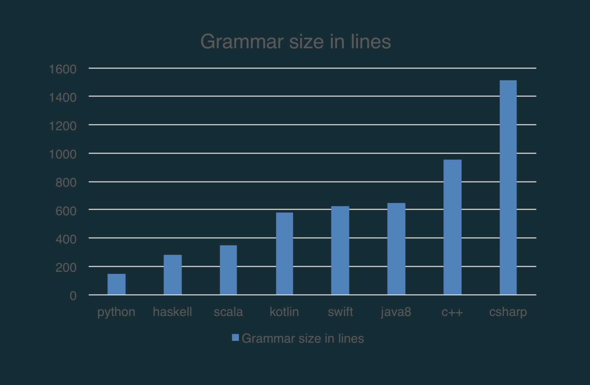
Малко, но мощни езикови средства,
които се комбинират добре едно
с друго
Симбиоза на ФП и ООП
“Scala was created to demonstrate combinations of FP and OOP are practical”
“Functions for the logic, objects as modules”
Детайлна типова система
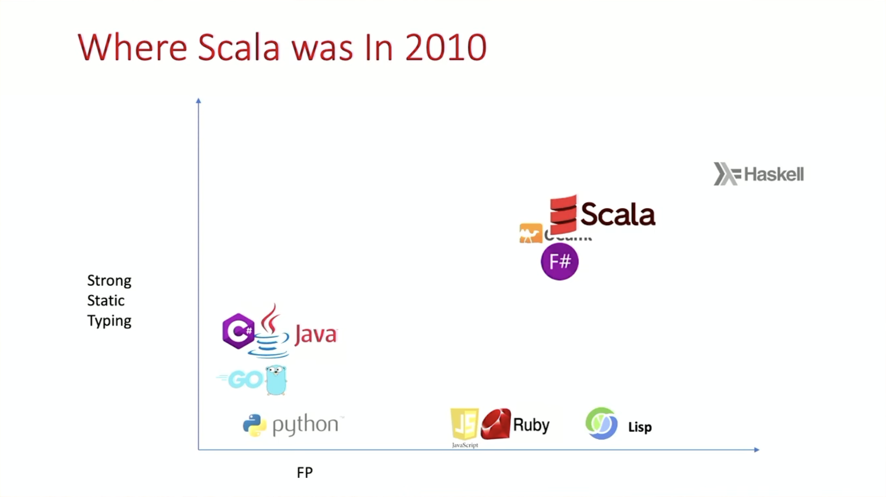
Детайлна типова система
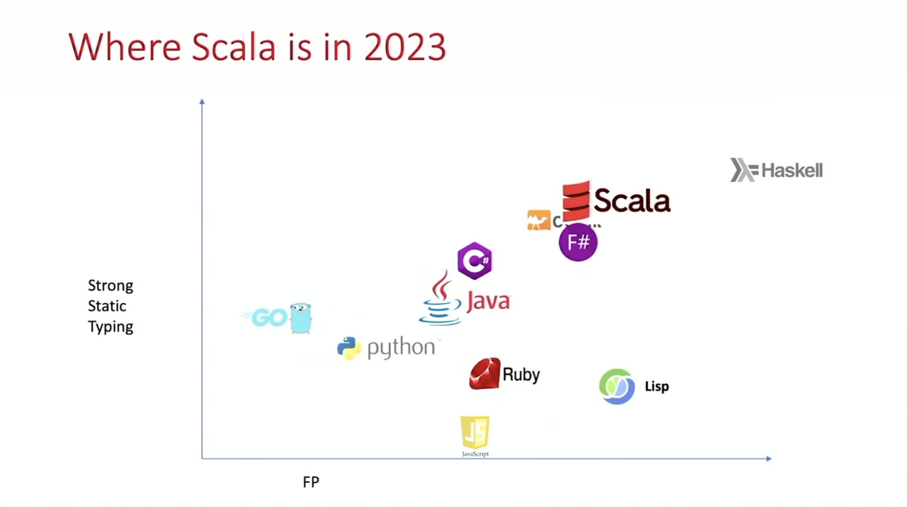
Детайлна типова система
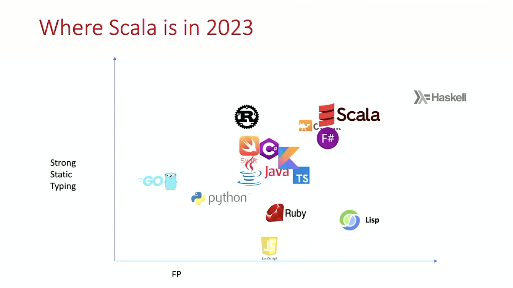
Защо Scala днес? (част 1)
- Създадено за ФП
- ФП екосистема
- С възможност да излезеш от ограниченията когато е нужно
- ФП в Java все още се усеща скалъпено
- И дори с fibers Java е все още години назад в concurrency
Защо Scala днес? (част 2)
- Интиутивен, приятен и силно изразителен
- Учи ни на много добри практики
- лесни за използване по дефоулт
- Уникален набор от функционалности
- непрекъснато подобряващ се
- Веднъж свикнал със Scala и този начин на мислене няма връщане назад :D
Scala 3
- Чакахме го 8 години :)
- DOT – математически модел за есенцията на Scala на ниво типова система
- Dotty – изцяло нов компилатор с модерен дизайн, базиран на DOT
- Опростяване, изчистване и допълване на езика (списък на какво ново)
Scala 3
Курсът ни ще се базира на Scala 3

Този път очакваме IntelliJ да работи добре :D
Ще ви срещнем и с мъничко Scala 2 синтаксис
- много код все още използва него (Бележка Боян: Но не ви трябва да го четете….)

Scala по света
- Скала през годините….
- Трансформация от специфични проблемни ниши към General Purpose Language
- Obligatory pointless name drop: Twitter, Netflix, Disney+, Stripe, Airtable, Databricks, Ocado!
Scala екосистеми и проекти
Иновативно и достъпно комюнити
(и ФП и Scala)
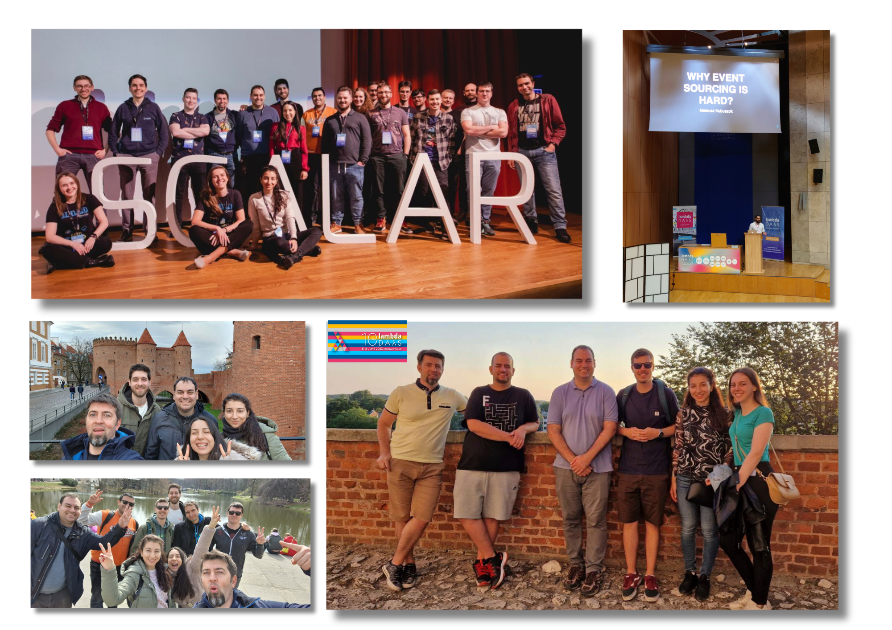
Какво ще учим 😊?
(част 1)
- Ще преразгледаме основите на ФП (и ООП)
- Immutability, immutability, immutability
- програми = стойности + трансформации върху тях
- типовете ни водят напред
- щом се компилира обикновено работи :D
- ADTs и как да си дизайнем домейна изчерпателно
- “make illegal state unrepresentable”
- Как да кодим и unhappy пътя
- без да хвърляме изключения
- изразявайки го чрез стойности, които можем да трансформираме
Какво ще учим 😊?
(част 2)
- Concurrency
- без мютекси, mutable състояние, deadlocks, …
- разбирайки го
- чрез асинхронни ефектни системи
- гарантиращи безпосност
- отново, щом се компилира – работи :P
- решаващи проблемите на Promise/Future
- composite, performant, auto-cancellation
- гарантиращи безпосност
- Прилагане на абстрактната мощ на математиката в
програмирането
- type class-ове
- думички като монади, апликативи и др.
- котки (Typelevel екосистемата) 😺
Какво ще учим 😊?
(част 3)
- Композитността ще е повтаряема тема
- От как да пишем малки функции до как да изградим
цялостно Scala приложение
- програмите като стойности
- домейн дизайн
- dependency injection, верифициран по време на компилация
- гарантирано безопасно управление на ресурси
- Уеб приложения
- които си комуникират
- HTTP, връзка с релационни бази, JSON сериализация, поточна обработка
- описване на endpoint-и като данни

- Курсът е с фокус върху концепциите и тяхното
разбиране
- за да можем да ги приложим и извън Scala
- често ще правим сравнения с други езици
Какво ще учим 😊?
Разпределение по теми
- Въведение във функционалното програмиране със Scala
- ООП във функционален език
- Основни подходи при функционалното програмиране
- Fold, колекции, lazy колекции
- Pattern matching и алгебрични типове от данни (ADTs)
- Ефекти и функционална обработка на грешки
- Конкурентност
- Type classes
- Монади и апликативи
- Cats и Cats Effect
- Изграждане на цялостно Scala web приложение
(навярно ще направим промени)
За какво няма да говорим достатъчно
- Scala.js, нито Scala Native
- Тестване
- ще разгледаме основите и ще ви насочваме през домашните
- но няма да успеем на наблегнем на тях и ще разчитаме и на вас
- Property-based testing
- Spark (но може да разгледаме примери)
- Direct style concurrency
- тепърва се развива (safety concerns)
- но вече съществуват Scala библиотеки, базирани на Java fibers (Ox)
- курсът ще се фокусира върху ефектни системи
Ресурси
 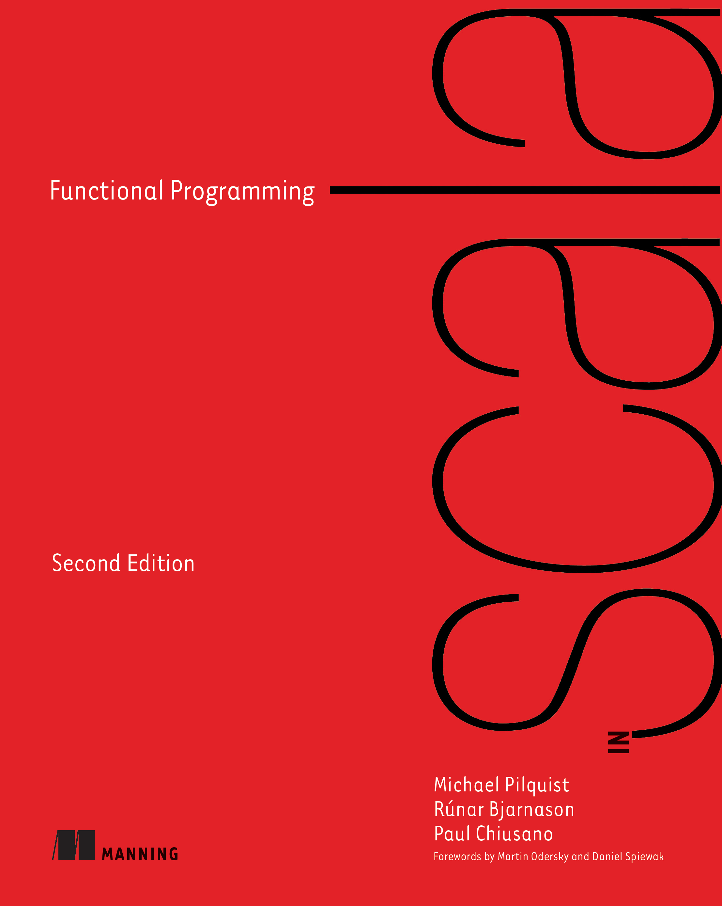
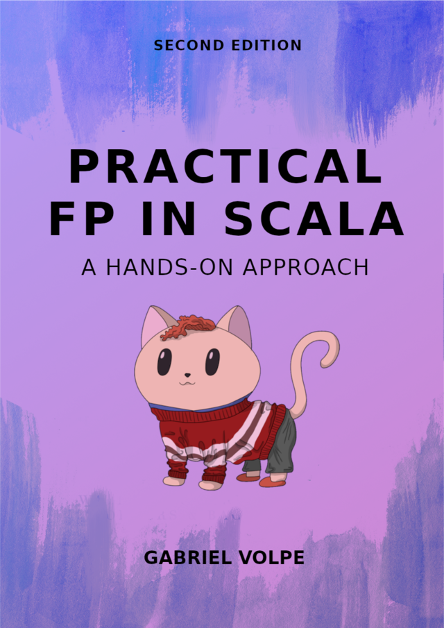
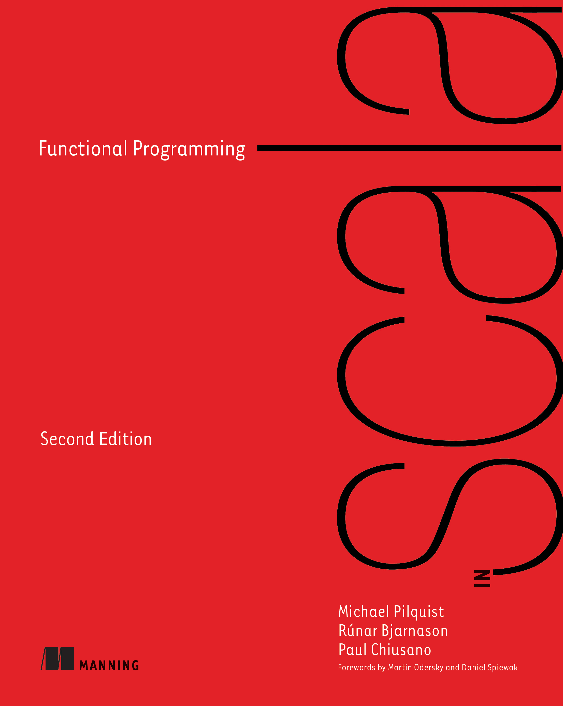
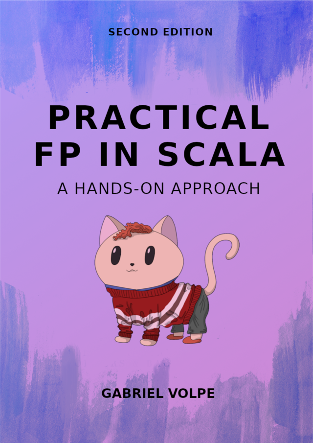
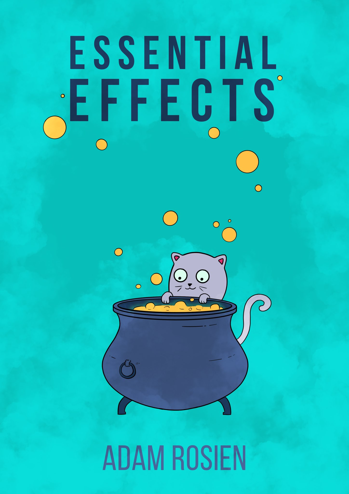 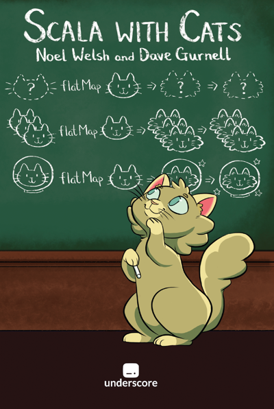
Ресурси
Малко код
Малко код
Малко код
object StreamsWithHttp extends IOApp.Simple:
val countToTen =
Stream
.awakeEvery[IO](1.second)
.map(_.toString + "\n")
.take(10)
val counterRoutes = HttpRoutes.of[IO]:
case GET -> Root / "counter" =>
Ok(countToTen)
val httpApp = counterRoutes.orNotFound
val serverBuilder = EmberServerBuilder.default[IO]
.withHost(ipv4"0.0.0.0")
.withPort(port"8080")
.withHttpApp(httpApp)
.build
def run: IO[Unit] = serverBuilder.use(_ => IO.never)